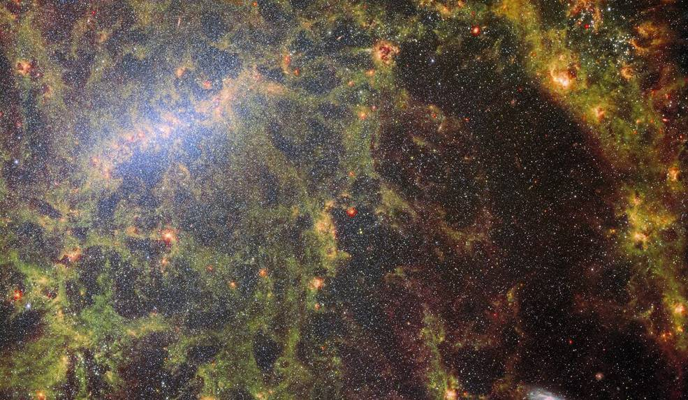
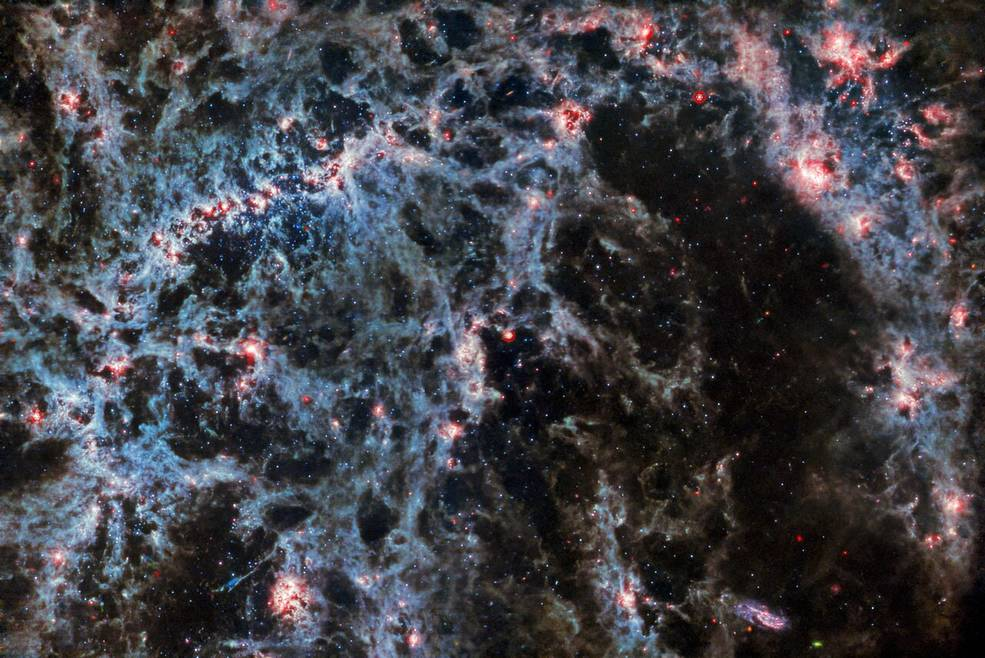
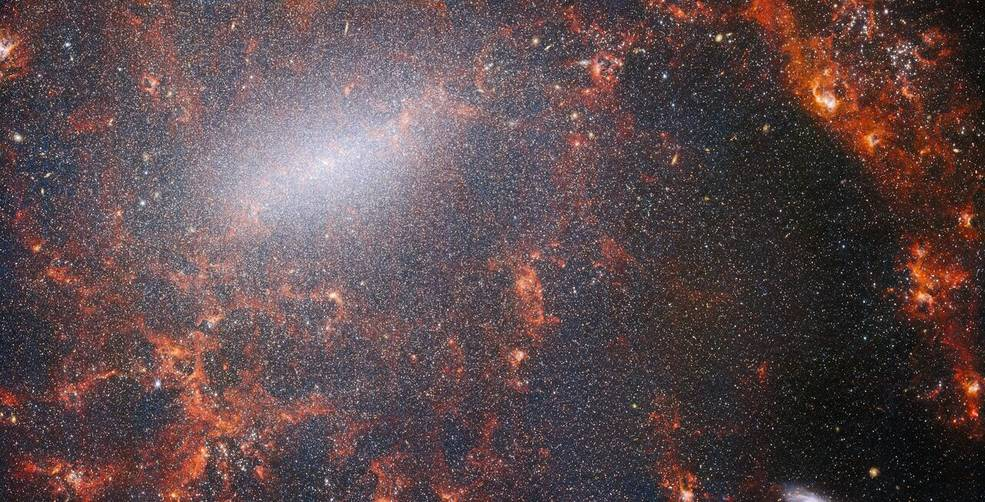

NASA’s Webb Space Telescope Peers Behind Bars

James Webb Space Telescope에서 촬영한 이 이미지에는 먼지와 밝은 성단의 섬세한 트레이서리가 있습니다. 가스와 별의 밝은 덩굴손은 막대나선은하 NGC 5068에 속하며, 이 이미지의 왼쪽 상단에 밝은 중앙 막대가 보입니다. Webb의 기기 두 대에서 합성한 것입니다. NASA 관리자인 빌 넬슨(Bill Nelson)은 금요일 폴란드 바르샤바에 있는 코페르니쿠스 과학 센터에서 학생들과 함께 한 행사에서 이미지를 공개했습니다.
NGC 5068은 처녀자리 방향으로 지구에서 약 2천만 광년 떨어져 있습니다. 은하의 중심에 있는 밝은 별 형성 지역의 이 이미지는 인근 은하에서 별 형성에 대한 관찰의 저장소인 천문학적 보물 창고를 만들기 위한 캠페인의 일부입니다. 이 컬렉션의 이전 보석은 여기 (IC 5332) 및 여기 (M74) 에서 볼 수 있습니다 . 이러한 관측은 두 가지 이유로 천문학자에게 특히 가치가 있습니다. 첫 번째는 별 형성이 별 사이에 있는 미약한 플라스마의 물리학에서 전체 은하의 진화에 이르기까지 천문학의 많은 분야를 뒷받침하기 때문입니다. 가까운 은하계에서 별의 형성을 관찰함으로써 천문학자들은 Webb의 첫 번째 사용 가능한 데이터 중 일부로 주요 과학적 발전을 시작하기를 희망합니다.
두 번째 이유는 Webb의 관측이 허블 우주 망원경 과 지상 관측소를 포함한 망원경을 사용하는 다른 연구를 기반으로 하기 때문입니다 . Webb은 천문학자들이 10,000개의 성단의 허블 이미지, 초대형 망원경(VLT)에서 20,000개의 별 형성 방출 성운의 분광 매핑, 12,000개의 어둡고 밀도가 높은 분자 구름 관측과 결합할 수 있는 19개의 인근 별 형성 은하의 이미지를 수집했습니다. ALMA(Atacama Large Millimeter/submillimeter Array)로 식별됩니다. 이러한 관측은 전자기 스펙트럼에 걸쳐 있으며 천문학자들에게 별 형성의 세세한 부분을 종합할 수 있는 전례 없는 기회를 제공합니다.
새로 태어난 별을 둘러싸고 있는 가스와 먼지를 들여다볼 수 있는 능력을 갖춘 Webb은 특히 별 형성을 지배하는 과정을 탐구하는 데 적합합니다. 별과 행성계는 허블이나 VLT와 같은 가시광선 관측소에 불투명한 가스와 먼지의 소용돌이치는 구름 사이에서 태어납니다. Webb의 장비 중 두 가지( MIRI (중적외선 기기) 및 NIRCam (근적외선 카메라))의 적외선 파장에 대한 예리한 비전은 천문학자들이 NGC 5068의 거대한 먼지 구름을 통해 바로 볼 수 있게 했으며 별 형성 과정을 다음과 같이 포착할 수 있었습니다. 그들은 일어났다. 이 이미지는 이 두 장비의 기능을 결합하여 NGC 5068의 구성에 대한 진정으로 독특한 모습을 제공합니다.

James Webb Space Telescope의 MIRI 장비에서 촬영한 막대나선은하 NGC 5068의 이 이미지에서 나선은하의 먼지투성이 구조와 새로 형성된 성단을 포함하는 빛나는 가스 거품이 특히 두드러집니다. 세 개의 소행성 흔적이 작은 청록색 점으로 표시된 이 이미지에 침입합니다. 소행성은 먼 목표보다 망원경에 훨씬 더 가깝기 때문에 이와 같은 천체 이미지에 나타납니다. Webb이 천체의 여러 이미지를 캡처하면 소행성이 움직이므로 각 프레임에서 약간 다른 위치에 나타납니다. 많은 별들이 근적외선이나 가시광선보다 중적외선 파장에서 밝지 않기 때문에 별 옆에 있는 소행성을 더 쉽게 볼 수 있습니다.

James Webb Space Telescope의 NIRCam 장비에서 촬영한 막대나선은하 NGC 5068의 모습은 밝은 중심 막대를 따라 가장 밀집된 은하계의 엄청난 수의 별들과 내부의 어린 별들이 비추는 불타는 붉은 가스 구름으로 가득합니다. 이 은하의 근적외선 이미지는 NGC 5068의 핵심을 구성하는 오래된 별들의 거대한 집합으로 가득 차 있습니다. NIRCam의 예리한 비전을 통해 천문학자들은 은하의 가스와 먼지를 통해 별을 면밀히 조사할 수 있습니다. 빽빽하고 밝은 먼지 구름이 나선팔의 경로를 따라 놓여 있습니다. 이들은 새로운 별이 형성되는 수소 가스 집합체인 H II 영역입니다. 젊고 활기찬 별은 주변의 수소를 이온화하여 빨간색으로 표시되는 이 빛을 생성합니다.